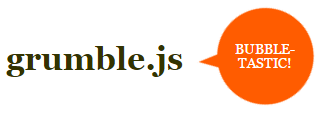

grumble
grumble.js 是一個 jquery 氣泡插件 可以在任意 元素 任意角度 顯示一個 氣泡  1 從 github 下載最新源碼 2 將 images/bubble-sprite.png js/jquery.grumble.min.js css/grumble.min.css 加入項目 3 使用 grumble 為元素 增加氣泡
example
$('div').grumble({
text: 'this is a test',
hideAfter: 2000,
});